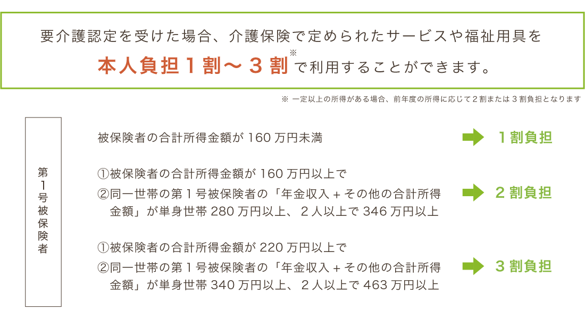
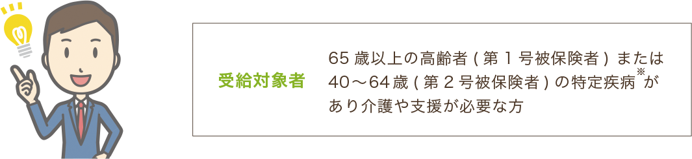
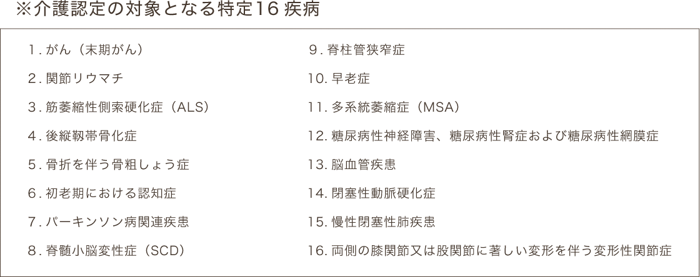

要介護認定の手続きはお済みですか？
親の介護問題、いつか考えなければと思いつつ、先送りになったりしていませんか？ 65歳になると、介護保険の加入者 であることを証明する「介護保険被保険者証」が交付されますが、この保険証があれば介護サービスが受けられるというわけではありません。介護保険サービスの利用をするためには、まず要介護認定を受けて「要介護」または「要支援」の 判定をもらう必要があります。

介護認定を受ける手続きの流れ

基本的に本人または家族が申請を行います。ですが、何らかの理由により本人または家族が申請できない場合、市区町村窓口のほか、地域包括支援センター、居宅介護支援事業所などに相談すれば申請を代行をしてもらうことも可能です。
申請後、1 ～ 2 週間ほどで、認定調査員が対象者本人のご自宅へ訪問し、心身の状態についての聞き取りなどを行 います。あわせて市区町村からは、かかりつけの主治医に意見書の提出依頼がなされます。
市区町村において専門家による介護の必要度の判定を行う認定審査会が開かれます。コンピュータ処理による一次 判定の後、主治医の意見書や調査員の聞き取り調査、一次判定の結果などをもとに二次判定を行い、要介護認定か どうかの最終決定をします。
申請から１か月以内に判定が行われ、要介護認定の「要介護・要支援認定結果通知書」が郵送にて届きます。認定 の結果に不満がある場合は、認定審査会に再度審査をもとめることができます。
介護認定が出されたら、介護保険を利用したサービスを受けることができます。まずはお近くの地域包括支援セン ターや居宅介護支援事業所へ相談し、最適なケアプランを作成しサービスを利用しましょう。
